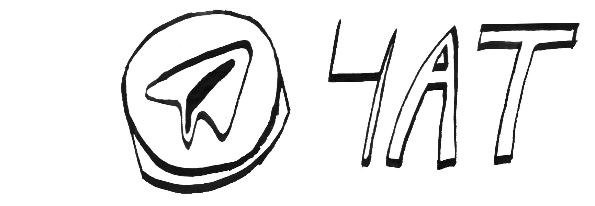
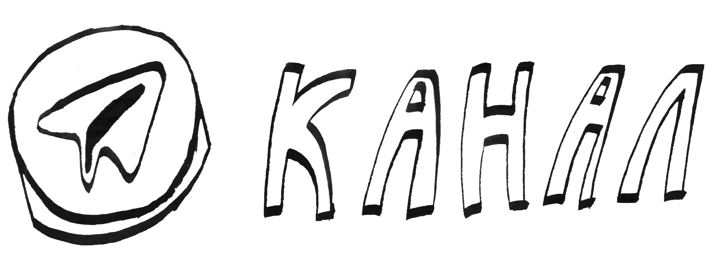

на радио много передач много о чём,
под них (и вместе с ними) можно делать много что.
а здесь некоторые из регулярных.
Манифест Манифест. Манифистирую манифест. Мани мани мани. Манифест Манифест. Манифистирую манифест. Мани мани мани. Манифест Манифест. Манифистирую манифест. Манифест Манифест. Манифистирую манифест. Манифест Манифест. Манифистирую манифест. Забываю прислать манифест. Ставлю чашку с чаем на недописанный манифест. Остаются кольца-отметины на недописаном манифесте. Это манифест. Смазываются буквы. Манифеста. Манифест мой манифест. Манифест Манифест. Манифистирую манифест. Мани мани мани. Манифест Манифест. Манифистирую манифест. Мани мани мани. Манифест Манифест. Манифистирую манифест. Манифест Манифест. Манифистирую манифест. Манифест Манифест. Манифистирую манифест. Забываю прислать манифест. Ставлю чашку с чаем на недописанный манифест. Остаются кольца-отметины на недописаном манифесте. Это манифест. Смазываются буквы. Манифеста. Манифест мой манифест.
это я, я оля котрелёва.
в целом мне все нравится и ко всему я отношусь с осторожностью
ничего такого уж, всё как у всех, в семь утра мне хочется спать, а в шесть утра иногда ноги заплетаются и я не могу дойти до дома.
люблю ходить пешком, дорогу, идёшь-идёшь и чётче становится. музыку люблю ещё, особенно, когда она сама рождается
ЕГОР ЗАЛОГИН
Отучился на биолога, специализируюсь на муравьях, форсирую естественнонаучный блок передач на радио.
Люблю есть еду и пить пиво, слушать джаззз, кумбиа и дабстеп, смотреть фильм " строгий юноша".
Ещё люблю Броза Тито и советскую сатиру.
Не люблю Вертинского и кабачки.
Очень болтливый и всё время должен денег.
Группа "девушка с мотыгой" - по-прежнему музыка будущего.
Главное, чего сейчас нам всем не хватает, это гимнастическая пирамида (типа делай раз). Будьте здоровы.
— Федя Фокин
Привет. Я Сева и я астроном.
Я люблю горы и музыку, свою дачу и болтать с людьми.
Половину жизни я стараюсь проводить в путешествиях, ещё одну половину - программирую на благо отечественной науки и ещё одну половину что-то кому-то рассказваю (астрономию школьникам, кулстори друзьям, а иногда наоборот и по-другому)
Мечтаю полететь в космос и чтобы все были счастливы.
это стеша острова.
меня зовут аня.
я родилась в москве. но мечтаю пожить где нибудь ещё. и ещё где нибудь.
мне очень много всего интересно. так много иногда что это мешает мне разобраться что мне нравится а что нет. поэтому чаще всего мне нравится все. всё и все.
возможно нужно добавить, что я хочу быть художником и поэтому мне доверили делать все визуальное для радио. теперь я хожу и рисую приёмник на стенах.
меня зовут матвей ильич соколовский и я много чего делаю. например это радио. ещё играю на виолончели. вообще я, в общем, музыкант, только до сих пор фальшиво играю. ну это ладно, пройдёт.
а ещё я лингвистику люблю, но заниматься ей не получилось. так что просто применяю лингвистическое знание в быту, языком играю.
короче, на самом деле, куда ни посмотри, везде интересно. и эту идею радио в целом должно отражать. вот
|  | телеграм-чат это наша основная точка сбора, которая возникла сразу вместе с радио. там можно обсуждать эфир, благодарить ведущих, делать им замечания, задавать вопросы по ходу эфира и так далее. кстати сообщения из телеграмм-канала туда тоже попадают. |
|  | телеграм-канал это тоже основное. на него обязательно подписаться, чтобы точно не пропустить что-то интересное в эфире. в нём публикуется расписание на день и потом предупреждения о начале каждой передачи. |